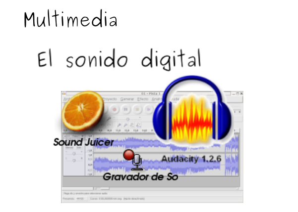

Materials curriculars INF
Introducción

Este artículo está licenciado bajo Creative Commons Attribution-NonCommercial 2.5 License
Formació del Professorat - CEFIRE
Introducción
Este artículo está licenciado bajo Creative Commons Attribution-NonCommercial 2.5 License
Formació del Professorat - CEFIRE